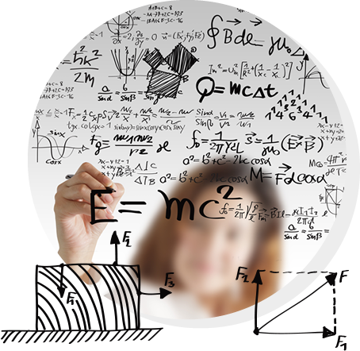

獵豹科教 CheetahSTEM
獵豹定位為「以數學為核心的 STEM 資優與高端競賽培訓」，涵蓋數學、自然科學、程式設計，並服務台灣、兩岸及全球華人學生。
獵豹科教CheetahSTEM是集合華人區一群頂尖的K12資深升學、數理資優教育與競賽專家成立的網路教學團隊。目前已成為華人圈著名的精英學習、培訓與資訊交流社群。

國內升學
針對台灣K12各級升學考試，開設針對性課程
- 國小升私中、國中數資班：PK系列
- 國中升高中會考： J系列
- 國中升高中科學/數資班：J+FJ系列、輕競賽課程
- 高中升大學（學測、分科 測驗、二階筆試）：S系列+FS系列
國際升學
針對國外著名大學升學所需的數理科目或競賽，開設G9-G12相關課程
- 美,英,加,澳,紐的K12數理課程:
- 美國Common Core課程
- 英國IGCSE課程(0580,0606)
- SAT數學
- AP,IB,A-Level:
- Calculus (FUC系列 微積分)
- Statistics (FUS系列 統計學）
- 牛津，劍橋入學筆試：MAT，STEP個人指導課
- 法國高等學院預備班入學（CPGE）：
- （S,FS,FA系列)+AMC系列
資優與競賽
獵豹資優系列課程是針對前端學習者的「菁英型學程」，除了課綱的加深加廣的課程外，也有專為提升科學素養與競賽活動而設計的課程。
- 小學競賽(IMC,OMC,卓越杯,超越杯,IMAS,BIMC,PMWC)：PK系列
- 國中競賽(AMC8, JHMC, IMAS, BIMC)：FJ系列，AMC8
- 高中競賽(AMC10/12,TRML,APX檢定,學科能力競賽)：FS系列，AMC10/12系列
- 中高階競賽(IJSO,學科能力競決賽,AIME,APMO,TMO,IMO）:AIME，FA系列
STEM 教育與願景
以打造「全球華人K12的STEM菁英學習平台與資訊交流社群」為願景。
獵豹科教透過網際網路，將優秀的師資團隊與分佈在世界各地的華人學生會聚在一起，地理範圍涵蓋兩岸三地、北美、歐洲、新加坡、澳、紐等地，提供貴族品質但平民價格的優質教育，徹底發揮網際網路的精神與優勢！
獵豹科教以「前瞻性的思維、高觀點的視野、先進的國際觀」來設計課程。
獵豹科教CeetahSTEM以數學為核心，擴及STEM領域，針對課綱進度、資優、競賽、先修、國際教育...等領域提供
各系列的數學課程
程式設計&數學課程 (GGB系列、Python系列）
從數學競賽到AI時代人才培育
獵豹科教CheetahSTEM打造華人K12菁英STEM學習平台
面對人工智慧快速發展，K12教育的重點正從單純追求考試成績，逐步轉向數學思維、科學素養、程式能力與跨領域解題能力。長期投入數理資優與競賽教育的「獵豹科教 CheetahSTEM」，近年以數學為核心，整合自然科學、程式設計、AI與國際數學競賽，建立從小學、國中、高中一路延伸至大學先修的STEM菁英教育體系。
獵豹科教將自身定位為「全球華人K12的STEM菁英學習平台與資訊交流社群」，主要透過網路教學，讓分布於台灣、中國大陸、香港，以及北美、歐洲、新加坡、澳洲、紐西蘭等地的華人學生，能跨越地域限制共同學習。
不只超前學習：以數學建立長期競爭力
不同於以大量刷題及短期考試技巧為主的補習模式，獵豹科教的課程設計強調「以數學能力為核心，逐步建立科學思維」。
獵豹認為，數學不只是升學考科。在AI、資訊科技、金融工程、半導體及各類科技產業快速發展的今天，數學、自然科學與程式設計已逐漸成為下一世代人才共同的底層能力。
因此，從小學階段開始，獵豹的課程即不單追求超前進度，而是同時訓練邏輯推理、觀察、專注、想像、判斷與問題解決能力；進入國高中後，再逐步銜接資優教育、科學班與數資班入學、數學競賽以及國際升學。
目前獵豹數學課程從小學PK系列、國中J系列及FJ資優與輕競賽系列，到高中S、FS系列，再向上延伸至FA高階數學競賽，以及微積分、統計學、線性代數等大學先修課程，形成一套具有連續性的學習路徑。
從AMC、AIME一路到IMO 建立完整數學競賽培訓體系
在數學競賽領域，獵豹科教的課程涵蓋美國數學競賽AMC 8、AMC 10、AMC 12、美國數學邀請賽AIME，以及更高階的USAMO、APMO、台灣數學奧林匹亞TMO與國際數學奧林匹亞IMO等競賽。
不同程度學生可以從基礎資優課程開始，再依能力逐步進入競賽訓練，而不是一開始即以高難度題目大量操練。
這種培訓模式背後，與獵豹的師資結構有直接關係。
獵豹科教的教研團隊包括台灣大學數學博士、電機博士、資優教育教師、國際學校教師及具有IMO、AMC、AIME等競賽背景的教師與顧問。部分教研成員本身曾獲IMO金牌，或具有指導IMO、IPhO、AMC、AIME與高中數理資優學生的經驗。
共同創辦暨教研團隊則長期投入數學競賽與資優教育，過去所屬團隊指導學生的經歷涵蓋IMO、APMO、IPhO、IOI、AMC與AIME等國際競賽，部分學生後續進入MIT、史丹佛、牛津、哥倫比亞、卡內基美隆、加州理工與帝國理工等世界大學。
科學班與數資班成為另一項培訓重點
除了國際數學競賽，台灣高中科學班與數理資優班也是獵豹科教近年投入的重要領域。
獵豹針對希望報考高中科學班、數資班的學生，設計數學與自然科學課程，內容並非單純收集歷屆考古題，而是希望從國中甚至小學高年級開始，逐步建立未來理解高中數學、物理、化學與生物所需要的基礎。
依獵豹科教官網公布資料，2024年獵豹學子錄取各高中科學班至少23人，其中建中科學班錄取12人；網站亦記錄學生在APX高中數理能力檢定、國際數學競賽、科學班免試保送等項目取得成績。
這些成果使「科學班數學」、「數資班入學」、「國中資優數學」與「高中數學競賽」逐漸成為獵豹課程體系中的核心項目。
數學結合GeoGebra、程式設計與AI
值得注意的是，獵豹科教並未將STEM教育侷限於傳統奧林匹亞競賽。
近年獵豹陸續發展GeoGebra數學與程式整合課程，讓學生利用動態幾何及數學軟體探索幾何、函數、3D建模等數學概念，並在部分課程加入AI創作與立體模型實作。
其他課程也包括Scratch，以及數學與程式設計相關內容。
這種設計反映出獵豹對AI時代教育的一項基本判斷：學生未來真正需要的，不只是會計算一道數學題，而是能把數學抽象概念轉換為模型，再利用軟體、程式與AI工具探索問題。
換句話說，程式不是另一門孤立的才藝課，而是學習數學與科學的一種工具。
從台灣升學走向全球教育
獵豹的另一項特色，是將台灣升學制度、數學資優教育及國際教育放在同一套學習架構中。
在台灣升學方面，課程涵蓋國小資優、國中會考、科學班與數資班、學測、分科測驗及大學二階筆試；國際教育方面，則延伸到Common Core、IGCSE、SAT Mathematics、AP、IB、A-Level，以及牛津MAT、劍橋STEP等大學入學考試所需的數理能力。
這代表學生不必在「台灣升學」與「國際教育」之間過早二選一，而是先建立數理能力，再依不同人生階段與升學方向調整學習路徑。
獵豹認為，在全球化與AI高速變化的時代，K12菁英教育不能只回答「下一次考試考什麼」，而應進一步思考：「十年後，什麼能力仍然具有競爭力？」
AI時代，重新理解「數學好」的意義
生成式AI出現後，有人開始質疑：既然人工智慧可以解題，學生是否還需要投入大量時間學習數學？
獵豹科教採取的觀點恰好相反。
AI愈強，人真正需要具備的能力，愈不是機械式計算，而是理解問題、建立模型、判斷答案、提出新的問題，以及把不同領域知識連結起來。
而數學教育真正的價值，恰好就在這些能力。
因此，從小學資優數學、AMC與AIME數學競賽，到科學班、數資班、GeoGebra、程式設計、微積分與高等數學，表面上看似不同的課程，在獵豹CheetahSTEM的教育架構中，其實都指向同一件事情：
培養能夠理解未來，而不是只準備下一次考試的學生。
在AI重新定義學習與工作的年代，這可能也正在重新定義「數學教育」本身。
獵豹簡介常見問答（Q&A）
整理家長與學生最常問的問題，一次看懂獵豹科教CheetahSTEM是誰、教什麼、適合誰。
認識獵豹
獵豹科教CheetahSTEM是什麼樣的教育機構？
獵豹科教CheetahSTEM是由華人區一群頂尖的K12資深升學、數理資優教育與競賽專家成立的網路教學團隊，定位為「以數學為核心的 STEM 資優與高端競賽培訓」，涵蓋數學、自然科學與程式設計，願景是打造「全球華人K12的STEM菁英學習平台與資訊交流社群」。
獵豹科教和一般補習班有什麼不同？
獵豹科教不以大量刷題和短期考試技巧為主，而是「以數學能力為核心，逐步建立科學思維」。課程不單追求超前進度，同時訓練邏輯推理、觀察、專注、想像、判斷與問題解決能力，再依學生程度銜接資優教育、科學班與數資班、數學競賽及國際升學。
獵豹科教怎麼上課？海外華人學生也可以參加嗎？
可以。獵豹科教主要透過網路教學，學生分布於台灣、中國大陸、香港，以及北美、歐洲、新加坡、澳洲、紐西蘭等地，讓全球華人學生能跨越地域限制，與優秀師資一起學習。
獵豹科教適合哪些年齡層的學生？
獵豹科教服務K12學生，課程從小學、國中、高中一路延伸至大學先修（微積分、統計學、線性代數等），適合希望加深數理能力、準備資優甄選、數學競賽或國際升學的學生。
課程體系
獵豹科教有哪些數學課程系列？
獵豹數學課程形成一條連續的學習路徑：小學PK系列、國中J系列、國中FJ資優與輕競賽系列、高中S系列與FS系列、FA高階數學競賽系列，以及大學先修的FUC微積分、FUS統計學與線性代數課程；另有AMC 8、AMC 10/12與AIME等競賽專班。
準備台灣升學考試，獵豹科教有哪些對應課程？
國小升私中、國中數資班可選PK系列；國中會考可選J系列；國中升高中科學班、數資班可選J+FJ系列與輕競賽課程；高中升大學的學測、分科測驗與大學二階筆試可選S系列+FS系列。
獵豹科教有程式設計或AI相關課程嗎？
有。獵豹科教開設GeoGebra數學與程式整合課程（GGB系列），讓學生用動態幾何與數學軟體探索幾何、函數與3D建模，部分課程加入AI創作與立體模型實作；另有Python系列與Scratch等數學結合程式設計的課程。獵豹認為程式是學習數學與科學的工具，而不是孤立的才藝課。
數學競賽
想準備AMC 8、AMC 10、AMC 12或AIME數學競賽，獵豹科教有相關課程嗎？
有。獵豹科教的競賽課程涵蓋美國數學競賽AMC 8、AMC 10、AMC 12與美國數學邀請賽AIME，並可繼續銜接更高階的USAMO、APMO、台灣數學奧林匹亞TMO與國際數學奧林匹亞IMO。學生可以從基礎資優課程開始，再依能力逐步進入競賽訓練。
小學生、國中生可以準備哪些數學競賽？
小學競賽（IMC、OMC、卓越杯、超越杯、IMAS、BIMC、PMWC）對應獵豹PK系列；國中競賽（AMC 8、JHMC、IMAS、BIMC）對應FJ系列與AMC 8課程；高中競賽（AMC 10/12、TRML、APX檢定、學科能力競賽）對應FS系列與AMC 10/12系列；中高階競賽（IJSO、學科能力競賽決賽、AIME、APMO、TMO、IMO）對應AIME與FA系列。
獵豹科教的競賽師資背景如何？
獵豹科教的教研團隊包括台灣大學數學博士、電機博士、資優教育教師、國際學校教師，以及具有IMO、AMC、AIME等競賽背景的教師與顧問，部分成員曾獲IMO金牌，或具有指導IMO、IPhO、AMC、AIME與高中數理資優學生的經驗。共同創辦暨教研團隊過去所屬團隊指導的學生，後續有人進入MIT、史丹佛、牛津、哥倫比亞、卡內基美隆、加州理工與帝國理工等大學。
科學班與數資班
想考高中科學班或數資班，獵豹科教可以怎麼幫忙？
獵豹科教針對報考高中科學班、數資班的學生設計數學與自然科學課程，不只是整理歷屆考古題，而是從國中甚至小學高年級開始，逐步建立理解高中數學、物理、化學與生物所需要的基礎。對應課程包括J+FJ系列與輕競賽課程。
獵豹科教學生考上科學班的成果如何？
依獵豹科教官網公布資料，2024年獵豹學子錄取各高中科學班至少23人，其中建中科學班錄取12人；學生也在APX高中數理能力檢定、國際數學競賽、科學班免試保送等項目取得成績。
國際升學
準備國際課程或出國升學，獵豹科教有哪些數理課程？
獵豹科教的國際升學課程涵蓋美國Common Core、英國IGCSE（0580、0606）、SAT數學、AP／IB／A-Level的微積分（FUC系列）與統計學（FUS系列）、牛津MAT與劍橋STEP入學筆試個人指導，以及法國高等學院預備班（CPGE）入學所需的S、FS、FA系列與AMC系列。
台灣升學和國際教育一定要提早二選一嗎？
不一定。獵豹科教把台灣升學制度、數學資優教育與國際教育放在同一套學習架構中，學生可以先建立扎實的數理能力，再依不同人生階段與升學方向調整學習路徑，不必過早二選一。
AI時代的數學教育
AI都會解題了，孩子還需要認真學數學嗎？
獵豹科教認為需要，而且更重要。AI愈強，人真正需要的能力愈不是機械式計算，而是理解問題、建立模型、判斷答案、提出新的問題，以及連結不同領域的知識，這正是數學教育真正的價值。獵豹的目標是培養能夠理解未來，而不是只準備下一次考試的學生。
為什麼獵豹科教以數學為核心來發展STEM教育？
在AI、資訊科技、金融工程、半導體等科技產業快速發展的今天，數學、自然科學與程式設計已成為下一世代人才共同的底層能力。獵豹科教以數學為核心，整合自然科學、程式設計、AI與國際數學競賽，建立從小學到大學先修的STEM菁英教育體系。